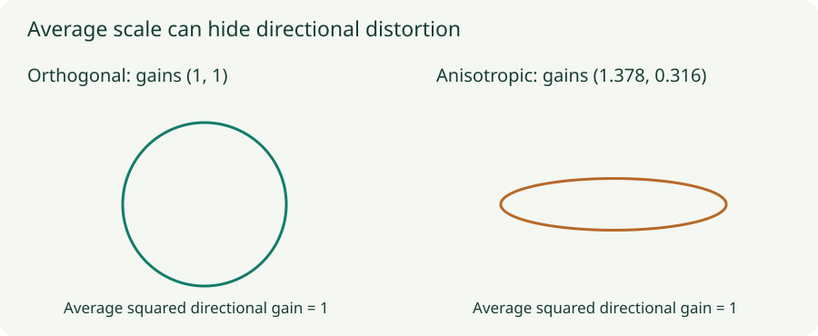

Orthogonal Initialization and LSUV: Beyond Entry-wise Variance
Inspect singular directions, compare random and orthogonal matrices, and calibrate layer outputs with data.
Matching weight variance controls an average scale, but a matrix can amplify some directions and nearly erase others while keeping that average unchanged. Orthogonal initialization addresses directional distortion. LSUV then uses actual data to calibrate layer output variance. These methods answer related but different questions.
1. Equal entry-wise variance does not mean equal directional gain
Write a matrix as $W=U\Sigma V^T$. Its right singular vectors specify input directions, and its singular values $\sigma_i$ give their amplification. The Frobenius norm satisfies $\|W\|_F^2=\sum_i\sigma_i^2$: it aggregates all squared gains into one number.
Compare $W_1=I_2$ with $W_2=\operatorname{diag}(\sqrt{1.9},\sqrt{0.1})$. Both have squared Frobenius norm 2 and the same average squared gain over isotropic unit directions. Yet $W_2$ stretches one axis by about $1.378$ and shrinks the other to about $0.316$. Repeated multiplication can magnify this imbalance.

2. What orthogonality guarantees
For a square orthogonal matrix $Q$, $Q^TQ=I$. Therefore $\|Qx\|^2=x^TQ^TQx=\|x\|^2$ for every vector. All singular values are one. Multiplying by a scalar gain $g$ makes all singular values $|g|$.
A product of square orthogonal matrices is also orthogonal. Thus a purely linear equal-width chain with gain one preserves every input norm exactly, up to numerical error. Gaussian matrices with matched entry-wise variance do not generally preserve each direction this way.
For a rectangular matrix, the appropriate notion is semi-orthogonality. If there are at least as many output dimensions as input dimensions, orthonormal columns can preserve all input norms. If there are fewer output dimensions, the map necessarily has a nontrivial nullspace and cannot preserve every input direction. Its nonzero singular values may still all equal one.
3. The activation changes the Jacobian
A nonlinear layer has Jacobian $J_l=D_lW_l$, where $D_l$ is diagonal with activation derivatives. Even if $W_l$ is orthogonal, a ReLU gate can set rows of this Jacobian to zero. The full network Jacobian $J=D_LW_L\cdots D_1W_1$ can therefore lose rank or develop unequal gains.
Dynamical isometry refers to a regime where the full input–output Jacobian’s singular values are close to one. Orthogonal weights can help in suitable settings, but orthogonal matrices plus arbitrary nonlinear gates do not automatically establish it. Distinguish a property of each weight matrix from a property of the entire input-dependent computation.
4. How to sample an orthogonal matrix
A standard construction samples a Gaussian matrix and computes a QR decomposition. Use the orthogonal factor, with the appropriate sign convention if a uniformly distributed orthogonal draw is intended, then apply the chosen gain. SVD offers another construction using orthogonal factors.
The browser lab orthonormalizes Gaussian rows with reorthogonalization; for its small square matrices this supplies a directly checkable orthogonal basis. In production, use a tested numerical linear algebra or initialization routine. A convolutional kernel flattened into a matrix can be orthogonal under that flattening without the full spatial convolution being an isometry.
5. LSUV calibrates what the current data actually produce
Layer-sequential unit-variance initialization begins with orthogonal weights, then visits layers in forward order. At each layer it measures output variance on a representative batch and rescales its weights. For a measured variance $v>0$, the basic correction is
For a bias-free linear layer, scaling $W$ by $c$ scales the output by $c$ and its variance by $c^2$. Choosing $c=1/\sqrt v$ therefore makes the measured variance one. Bias-free ReLU is positively homogeneous for positive $c$, so the same one-step scaling argument applies to its output on a fixed batch.
Other nonlinearities or intervening operations may require repeated measurement and correction, with a tolerance and an iteration cap. Calibrate sequentially because changing an early layer changes the inputs to later layers. Calibrating every layer independently on its old inputs would no longer describe the updated network.
The lab explicitly measures pooled post-activation variance over its batch and units. Other implementations may choose a different output location or reduction. Unit pooled variance does not mean every neuron has variance one, does not force zero means, and does not whiten correlations.
6. Lab: compare moments with the Jacobian spectrum
A sampled width-16 network
Compare Gaussian, orthogonal, and orthogonal-plus-LSUV initialization on 64 Gaussian inputs. Linear layers use gain 1; ReLU layers start with gain $\sqrt2$. LSUV then calibrates post-activation variance sequentially on this batch. The second chart computes the full network Jacobian’s singular values at the first input.
First choose a linear activation and orthogonal initialization. The singular values should stay at one across depth. Then select ReLU. Some singular values collapse even if the forward moments look reasonable. Finally enable LSUV: output variance is calibrated, but the singular values need not all become one.
The spectrum uses a numerical singular-value calculation on a 16-by-16 Jacobian, not the spectrum of individual weight matrices. Values below $10^{-12}$ share the plotting floor. The readout separately reports how many fall below that numerical threshold; this is not an exact symbolic rank calculation.
7. Calibration is a starting condition
LSUV is performed at initialization. It does not renormalize activations on every training batch like BatchNorm. Its batch should reflect the training inputs after intended preprocessing, and should not use held-out test data. A tiny or unrepresentative calibration batch can provide misleading estimates.
Near-zero measured variance is a diagnostic condition, not a reason to divide by an arbitrarily tiny number and generate huge weights. Check for inactive paths, constant inputs, and unsuitable measurement locations. Normalization layers and residual connections can make a direct weight rescaling behave differently from the simple homogeneous-layer argument.
Initialization can improve conditioning without selecting the best learning rate or guaranteeing generalization. Inspect gradients and first-step behavior after calibration, and preserve the seed and calibration procedure for reproducibility.
Questions with answers
Yes. Their singular values can distribute that gain differently across directions, and products can accentuate the imbalance.
The activation inserts a diagonal derivative mask. Zero entries can remove directions from the local Jacobian.
No. It calibrates specified output variances on a batch. That condition does not determine the complete Jacobian spectrum.
Sources
Saxe et al., Exact Solutions to the Nonlinear Dynamics of Learning in Deep Linear Neural Networks; Mishkin and Matas, All You Need Is a Good Init; PyTorch orthogonal initialization.